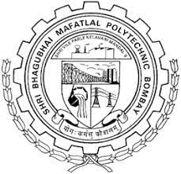

| Program : Computer Engineering (Division B) | ||||||
| W.e.f : 25th September 2022 | ||||||
| Academic Year : 2022 - 2023 | ||||||
| Class Coordinator : | Mrs. Neha More | Semester : 1B | (Revision 1) | |||
| Time | Monday | Tuesday | Wednesday | Thursday | Friday | Saturday |
| 07.00 - 08.00 |
Engineering Mathematics (PTU)
PHS CR 108 |
CS1 - Website Designing(PR)
NM ML Lab |
Applied Science (TH)
AJ CR 108 |
Fundamental of Computer
System(TH) RVP CR 302 |
Engineering Mathematics(TH)
PHS CR 108 |
Applied Science (TH)
AJ CR 106 |
| 08.00 - 09.00 |
Applied Science(TH)
AJ CR 108 |
CS1 - Website Designing
NM ML lab |
Communication Skills (TH) GS
CR 108 |
Engineering Mathematics (TH)
PHS CR 302 |
Engineering Mathematics (TU)
PHS CR 108 |
Applied Science (TU)
AJ CR 106 |
| 09.00 - 10.00 |
Universal Human Values(TU)
PSA CR 108 |
CS1 - Engineering Graphics(PR)
SRK Lab 5 CS2 - Website Designing(PR) NM Lab 3 |
CS1 - Applied Science(PR)
AJ Physics Lab CS2 - Fundamental of Computer System (PR) NM CC |
CS1 - Fundamental of Computer
Science (PR) RSP CC Lab CS2 - Applied Science (PR) AJ Physics Lab |
Engineering Graphiucs (TH) SRK
CR 108 |
Recess |
| 10.00 - 11.00 | Recess |
Fundamental of Computer
System(TH) JSK CR 108 |
CS1 - Applied Science(PR)
AJ Physics Lab CS2 - Fundamental of Computer System (PR) NM CC |
CS1 - Fundamental of Computer
Science (PR) RSP CC Lab CS2 - Applied Science (PR) AJ Physics Lab |
Recess |
Engineering Mathematics(TH)
PHS CR 204 |
| 11.00 - 12.00 |
CS1 - Engineering Graphics(PR)
SRK Lab 5 CS2 - Website Designing(PR) NM Lab 3 |
Recess | Recess |
Communication Skills (TU)
GS CC lab |
Communication Skills (TH)
GS CR 108 |
Engineering Mathematics (TU)
PHS CR 204 |
| 12.00 - 1.00 |
CS1 - Engineering Graphics(PR)
SRK Lab 5 CS2 - Website Designing(PR) NM Lab 3 |
Engineering Graphics(TH)
SRK CR 108 |
Universal Human Values (TH)
PSA CR 106 |
Recess |
Communication Skills(TH)
GS CR 108 |
Universal Human Values (TH)
PSA CR 204 |
| 01.00 - 02.00 |
CS2 - Engineering Graphics(PR)
SRK Lab 5 |
Engineering Mathematics(PTU)
PHS CR 108 |
CS2 - Website Designing(PR)
NM Lab 5 |
Website Designing (TH)
NM CR 302 |
CS1 - Website Designing(PR)
NM Lab 3 |
|
| 02.00 - 03.00 |
CS2 - Engineering Graphics(PR)
SRK Lab 5 |
CS2 - Website Designing(PR)
NM Lab 5 |
CS1 - Website Designing (PR)
NM Lab 3 |
|||
| Names | Course Codes and Names | |||||
|---|---|---|---|---|---|---|
| PSA - Mrs. Prachi Arora | Universal Human Values (UHV228906) | |||||
| GS - Mrs. Geetha S. | Communication Skills (CMS228903) | |||||
| PHS - Mr. Pratik Shah | Engineering Mathematics (EMT228901) | |||||
| SRK - Mrs. Sharyu Kadam | Engineering Graphics (ENG228904) | NM - Mrs. Neha More | Website Designing (WSD8907) | |||
| AJK - Mr. Ajinkya Jogale | Applied Science (ASC228902) | |||||
| RVP - Mrs. Rupali Pawar | Fundamental of Computer Science (FCS228905) | |||||
| JSK - Mr. Janardan Kulkarni , Head - Computer | Fundamental of Computer Science (FCS228905) | |||||
| VFI - Visiting Faculty | Fundamental of Computer Science (FCS228905) | |||||
| TH - Theory , PR - Practical , DR - Drawing , PTU - Practice Tutorial | Credits : 31 |